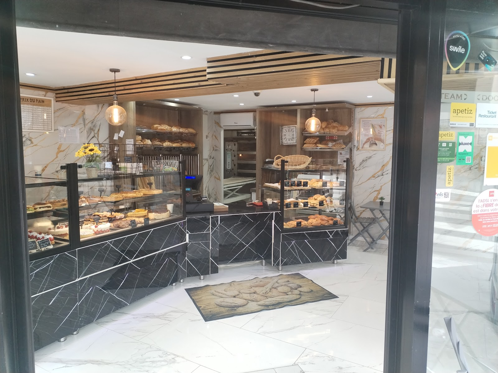
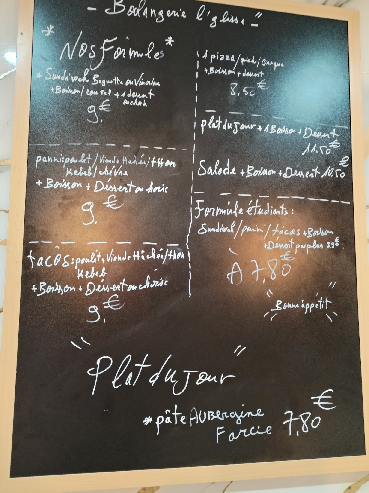
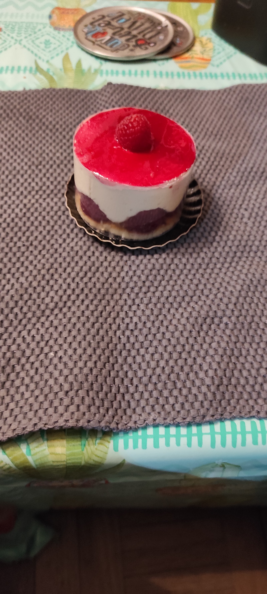
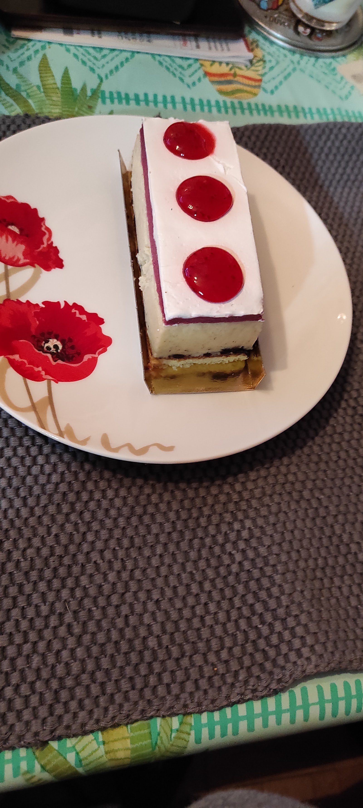
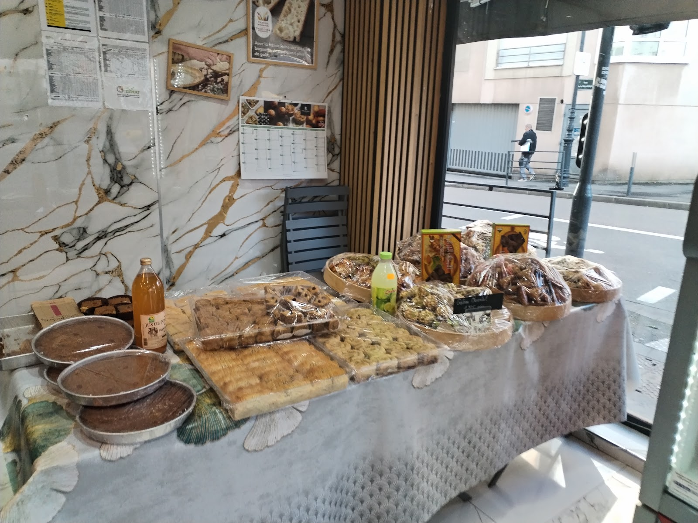
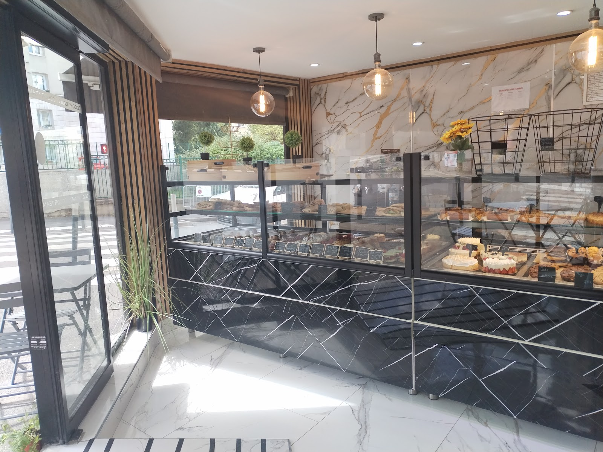

La flûte est un art.
Le sandwich, une révérence.
Chez Artisan Boulanger « La Flute De Pains », chaque baguette sort du fournil sous vos yeux, chaque recette rend hommage au goût vrai — dans un écrin de marbre, au cœur de Vanves.
La main qui façonne
Avant de reprendre la mythique Boulangerie de l'église, Toufik sillonnait les routes comme livreur d'équipements pour boulangeries. Il connaissait chaque pétrin, chaque four, chaque farine — mais c'est le geste qui lui manquait. Revenu au fournil par passion, il rachète ce commerce de Vanves avec une idée fixe : rendre au pain sa noblesse.
Le nom « La Flute De Pains » est né d'un sourire de comptoir — ce sandwich signature, la flûte croustillante qu'on dévore à deux mains, est devenu l'emblème de la maison. Farine de tradition, levain lent, odeur du four dès l'aube : ici, le pain est une conversation entre l'artisan et le quartier.
Aux côtés de Lazhar, complice du quotidien, Toufik écrit chaque jour une page nouvelle où le marbre veiné du mur dialogue avec la farine blanche et le bois blond des étagères.

Du pain qui croustille et des envies salées-sucrées
Une maison où chaque vitrine raconte une histoire de farine, de beurre et de savoir-faire.
Boulangerie classique
À partir de 1,20 €Baguette tradition au levain lent, pain de campagne à la croûte épaisse, flûte croustillante à la mie alvéolée — chaque pièce sort du fournil sous vos yeux, pétrie avec des farines de tradition.
Snacking fait maison
À partir de 5,50 €Fricassé tunisien au thon et harissa douce, hot-dogs gourmet, sandwichs suédois au saumon fumé, pizzas à emporter — des recettes généreuses qui réinventent le déjeuner sur le pouce.
Pâtisseries & douceurs
À partir de 3,00 €Opéra fondant, fraisier de saison, pâtisseries orientales aux amandes et au miel — la vitrine sucrée mêle l'élégance française aux parfums d'ailleurs pour les fins de repas ou les goûters gourmands.
« La Flute De Pains », le geste en héritage
Quatre créations qui portent le nom de la maison, pensées comme des plats signatures où le pain devient écrin.




Un lieu, des instants
La lumière chaude du matin sur le marbre veiné, les suspensions design, la terrasse à deux pas de l'église Saint-Remy — chaque image capte l'âme du lieu.
La preuve par le quartier
77 avis Google, une note de 3.8★ — les voix du quartier racontent le pain, l'accueil et les viennoiseries.
« Un vrai plaisir de passer chaque matin. Le pain de campagne est exceptionnel, la croûte croustille comme il faut. L'accueil est toujours chaleureux, on se sent comme chez soi. »
« Le fricassé tunisien est une tuerie ! Et les viennoiseries sont délicieuses. J'habite le quartier depuis 15 ans, cette boulangerie est une renaissance pour la rue de la République. »
« Très bon pain, mention spéciale pour la baguette tradition. Les sandwichs sont copieux et préparés avec soin. Un peu d'attente parfois, mais ça vaut le coup. »
« L'opéra est divin, le fraisier de saison aussi. Et le cadre est magnifique — ce mur en marbre, c'est vraiment élégant. Une adresse qui compte à Vanves. »
À portée de main
Retrouvez-nous au cœur de Vanves, face à l'église Saint-Remy. La flûte n'attend que vous.
📍 Adresse & Contact
- 26 Rue de la République, 92170 Vanves
- 📞 Téléphone : Numéro à venir — disponible prochainement
- ✉️ ltboulangerie@gmail.com
- 🌐 Fiche Google : Voir sur Maps
- 🛒 Petitscommerces.fr
🕐 Horaires d'ouverture
| Lundi | Fermé |
| Mardi | 6h30 – 20h00 |
| Mercredi | 6h30 – 20h00 |
| Jeudi | 6h30 – 20h00 |
| Vendredi | 6h30 – 20h00 |
| Samedi | 6h30 – 20h00 |
| Dimanche | 7h00 – 13h00 |